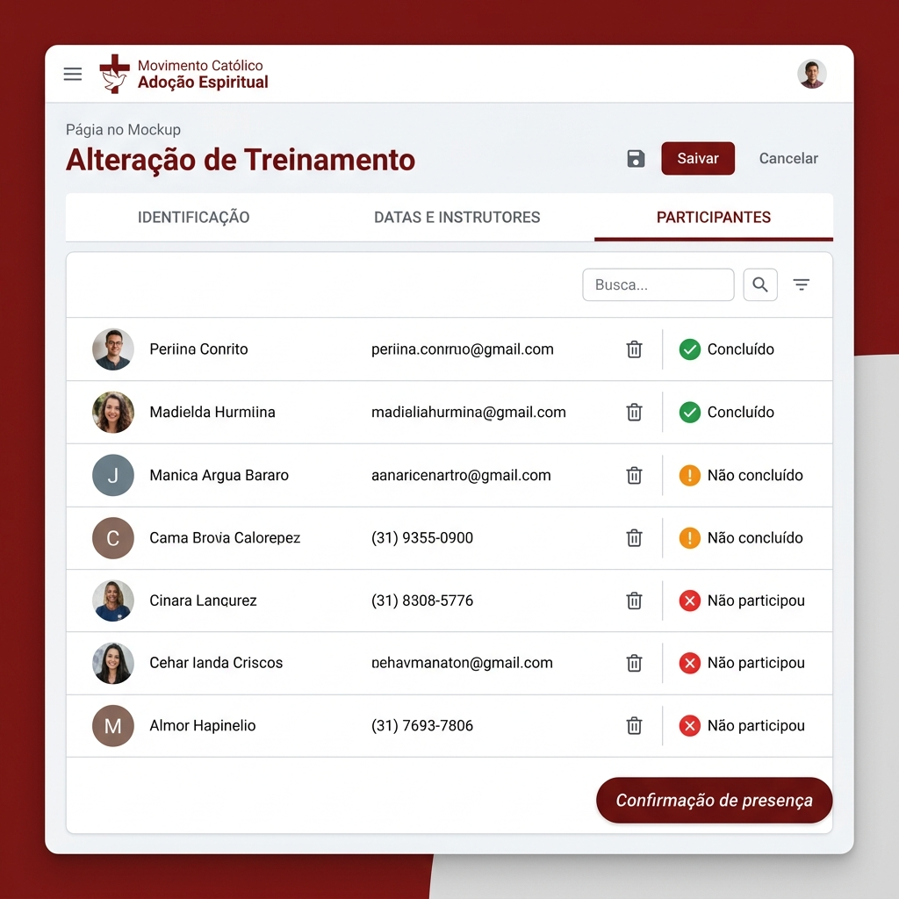
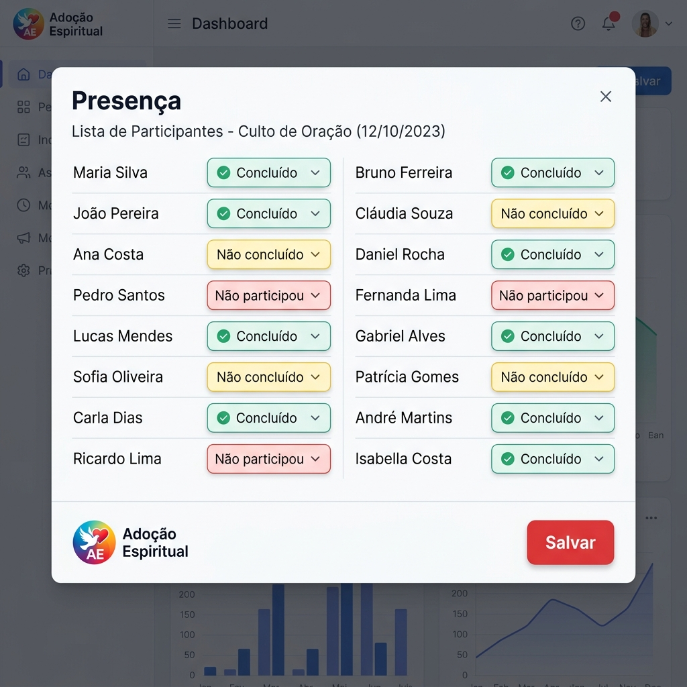

Guia Funcional do Usuário
Este guia orienta os usuários e coordenadores do portal Adoção Espiritual no uso correto das funcionalidades do sistema, garantindo um cadastro limpo, rastreabilidade e aproveitamento ideal de todas as ferramentas.
1. Visão Geral do Sistema
O Portal Adoção Espiritual é uma plataforma de gestão voltada para organizar e acompanhar o movimento nas suas instâncias territoriais e pastorais, divididas em:
- Nacional e Regional: Acompanhamento estratégico e divisão de regionais por estados do país.
- Arquidioceses e Paróquias: Gestão das atividades pastorais locais, celebrações, missas e eventos pró-vida.
- Colaboradores e Lideranças: Registro dos voluntários, contatos e controle de capacitação.
2. Acesso e Identificação (Login)
Para acessar as funcionalidades do portal, o usuário deve se identificar:
- Credenciais: Informe o E-mail, Telefone ou o seu **ID de Colaborador**, acompanhado de sua senha cadastrada.
- Meu Perfil: No menu superior direito, ao clicar no seu nome, você pode visualizar as informações da sua conta e acessar a tela Atualizar cadastro para atualizar seus dados pessoais e carregar sua foto de perfil.
3. Estrutura Territorial e Administrativa
3.1. Regionais
Apresenta a divisão regional do movimento no país e os estados pertencentes a cada regional. Apenas administradores com perfil de coordenação nacional podem incluir ou alterar regionais.
3.2. Arquidioceses
Cada arquidiocese é associada a uma Regional. Na tela de cadastro, é possível vincular um colaborador ativo para assumir a coordenação da arquidiocese correspondente.
3.3. Paróquias
Nível local onde as atividades do movimento de fato ocorrem. Cada paróquia é associada a uma arquidiocese. O sistema permite delegar a equipe de coordenação paroquial responsável pelas atividades.
4. Gestão de Colaboradores
Reúne os dados de todos os voluntários e membros ativos no movimento.
- Informações Cadastrais: Contatos, endereço, paróquia à qual pertence, seus talentos e motivação para participar do movimento.
- Foto de Perfil: Possibilita carregar a foto do colaborador para melhor identificação visual nas listagens do sistema.
- Status: Colaboradores podem estar como Ativo ou Inativo. Apenas os ativos podem ser selecionados para novas coordenações ou treinamentos.
5. Formação e Treinamentos
A preparação adequada dos voluntários é garantida pelo módulo de treinamentos.
5.1. Cadastro e Alteração
O treinamento é cadastrado com título, forma (Presencial ou Online), local (obrigatório se presencial), qualificação pretendida (Colaborador Adoção Espiritual, Coordenador Paroquial ou Coordenador Regional) e status (Agendado, Em andamento, Concluído ou Cancelado).
5.2. Datas e Instrutores
Na aba Datas e Instrutores, é possível agendar os dias, horários de início/fim e a pauta de cada módulo, além de definir o instrutor do treinamento.
5.3. Participantes e Confirmação de Presença
Na aba Participantes, são vinculados os colaboradores inscritos para a formação.
Confirmação de Presença: Para gerenciar quem concluiu a formação, clique no botão Confirmação de presença no rodapé da listagem.

Na tela que se abrirá, você deve selecionar a presença de cada participante individualmente através das seguintes opções:

6. Registro de Atividades Realizadas
Seção voltada a registrar e evidenciar as ações práticas promovidas pelas paróquias.
- Dados da Atividade: Data, classificação (Santa Missa, Palestra, Reunião), descrição detalhada e local.
- Participantes: Lista de colaboradores que participaram ativamente do evento.
- Galeria de Fotos: Permite fazer upload de fotos do evento. O usuário pode definir uma Foto Principal que ilustrará os relatórios e painéis do sistema.
7. Boas Práticas e Regras de Segurança
- Um Treinamento não pode ser excluído se houver participantes vinculados a ele.
- Uma Atividade não pode ser excluída se houver registro de fotos ou participantes.
- Um Colaborador com histórico de atividades no sistema não deve ser excluído. Para desativá-lo, modifique seu status para Inativo para preservar o histórico do banco de dados.